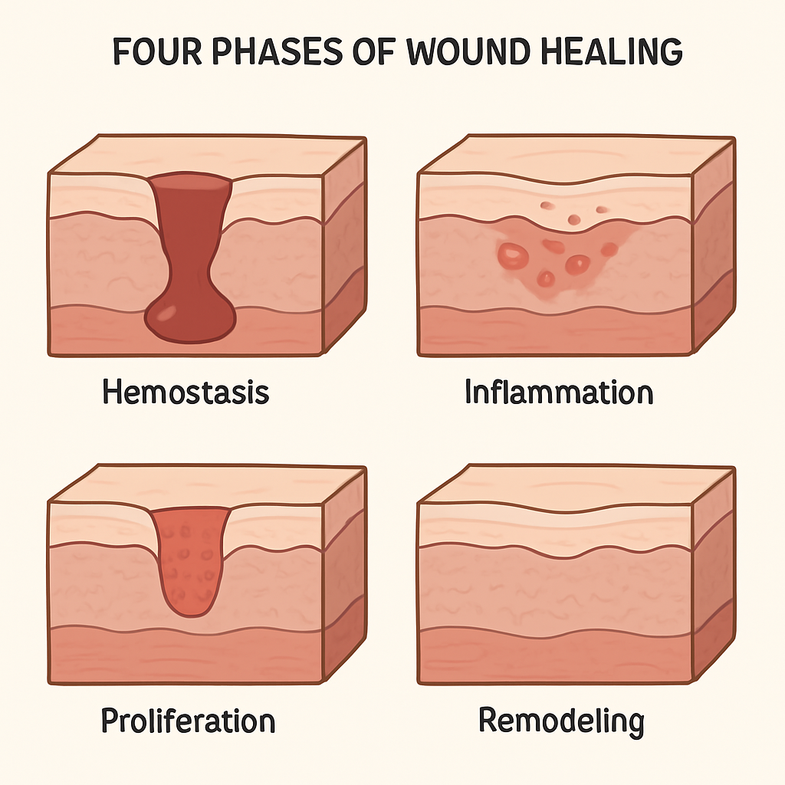

Bem-vindo(a), Estudante!
Conteúdo interativo e completo para estudantes e profissionais da área da saúde

Recursos do Portal
Resumos Completos
Conteúdo organizado por temas e subtemas para facilitar seu estudo
Acessar ResumosBanco de Questões
Mais de 150 questões com feedback imediato e explicações detalhadas
Testar ConhecimentosFerramentas de Estudo
Marca-texto e sistema de anotações para personalizar seu aprendizado
Usar Ferramentas